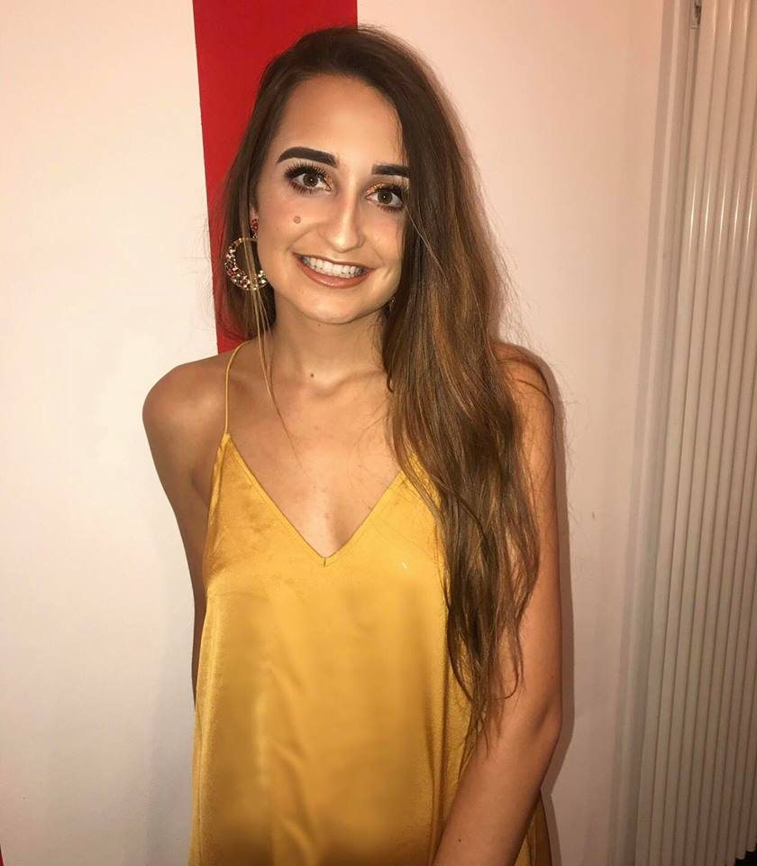

I would describe myself as a very ambitious, conscientious individual.
I am currently a first year studying
Computing Science in University of
Dundee. During my studies in school I successfully combined my
studies with
work and other commitments showing myself to be self-motivated, organised
and capable of
working under pressure. I enjoy working on my own initiative
or in a team. I am very big into drama and
singing and I take part in many
shows, this has made me a much more confident and approachable person.
I am a quick learner who is always seeking learning opportunities.